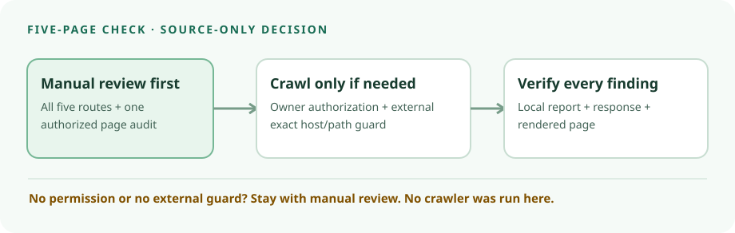

SiteOne Crawler v2.5.1 · source audit · 10 Oct 2026
For five pages, check them manually unless a bounded crawl is truly needed.
Before promoting a five-page site, open every intended route and inspect its links, final status and metadata. If permitted, run an authorized one-page Lighthouse audit on the priority landing page. Consider SiteOne Crawler only when several owned public routes need one inventory and the owner has explicitly authorized a crawl with an external host/path egress guard. This is source-only research: no SiteOne binary, fixture or site was run.

What the tagged project can inventory
The release list marked v2.5.1 Latest when checked; its 27 June 2026 release points to short commit 12b4916. The tagged Cargo manifest identifies version 2.5.1 and MIT, and the tagged licence contains MIT terms. That is the repository licence, not a finding about Chromium, dependencies, GUI or hosted-service terms. No archive was downloaded, hashed, built or executed.
The tagged README describes URL/status discovery, 404 and redirect reporting, and local HTML, JSON and text reports. The JSON specification includes 404 and redirect source links plus page title, description and indexing rows. The tagged SEO analyzer extracts title, description, canonical and HTML robots noindex, and flags selected missing or mismatched values. This is an inventory aid, not a ranking, accessibility, conversion or security verdict.
Choose the smallest authorized check
| Situation | Choice | Human check |
|---|---|---|
| Five routes are easy to inspect; one landing page matters most; or crawl permission is absent | Manual five-route checklist. Use Lighthouse only for an authorized page-level audit. | Open each route, follow navigation, inspect final status or redirect, rendered title, description, canonical and robots directives. |
| Many cross-links among several owned public routes; owner authorizes request inventory and external guard | Consider a bounded SiteOne v2.5.1 crawl and keep the report local. | Confirm flagged links and metadata against source, HTTP response and rendered site; repair and recheck. |
| Private pages, cookies, state-changing GET links, unclear redirects, third-party fetches or no exact-scope guard | Stop. Seek explicit permission or use manual review. | Define permitted origin and paths and a safe fixture before any later crawl. |
Lighthouse's official CLI writes a report for a supplied URL; it is useful for one page, not a whole-site link crawler. Neither score proves search ranking, accessibility conformance, sales or newsletter performance.
Do not mistake flags for a firewall
This is a paper protocol, not a runnable “safe command.” Have the operator list five owned, publicly intended GET URLs, check robots policy, and enforce exact origin/path permission outside SiteOne. Monitor requests and stop on an unexpected URL or redirect. One worker, a low whole-crawler request rate, a small visited-URL cap and assets off can reduce load; the tagged README documents --workers, --max-reqs-per-sec, --max-visited-urls and --disable-all-assets. None is a complete host/path firewall. Inspect auto-discovered config before a future run; hidden settings could change effective behavior. Avoid login, cookies, personal data, state-changing links, third-party targets, load testing, offline clone, SMTP, AI and upload. Save reports locally and privately.
Two small-site blind spots to verify yourself
The tagged analyzer checks a canonical mismatch by host, not full path. A canonical pointing to the wrong path on the same host therefore needs manual inspection even without a warning. Its site-wide critical noindex finding needs at least ten pages; for five pages, inspect each indexing row instead of expecting that alert. The displayed noindex count can include robots-denied pages, and the HTML-meta check alone does not establish X-Robots-Tag coverage or actual search-engine indexation. The current audit-report page uses broader “indexability” language; this report makes only the narrower tagged-source claim.
Leave browser rendering and transfers off
The tagged README and release note say --browser may use installed Chromium or offer a chrome-headless-shell download; --browser-auto-download pre-consents to it. Browser mode runs page JavaScript and subresources, may make external requests, and the README says domain and robots rules cover only the top document. It can also fetch rendered HTML twice. Do not enable browser rendering or a download without a separate provenance and egress review. AI is optional and upload is opt-in in the README; keep both off, including via config. A compiled-in feature is not a default outbound transfer.
Future isolated test card—not an observed result
On a fictional five-route example.test fixture, link /offer to /missing (expect 404 and source link), omit the /faq title and description, put unintended noindex on /contact, and point /about canonically to a different same-host path (review by hand even if no warning appears). Add one external link as a blocked egress marker. Record expected and actual local report rows, traffic log, HTTP responses and rendered pages. No fixture, pinned binary or runtime result existed for this audit, so none of these expectations is a verified observation.